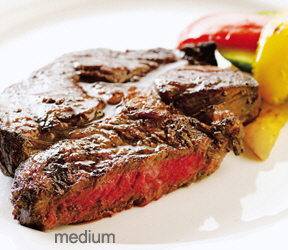

Our restaurant treats beef only to the finest Korean beef, so it's rich in flavor and juicy when you're in your mouth. And in our restaurant, there are steak types by grilling. See below for an introduction to steaks by grilling. Choose your taste.
Blue rare:
It is a steak-shaped meat sashimi, which is quickly cooked only at the very high temperature and is not cooked inside the meat tissue. If the meat is thick, the middle part is still cold, and you can think of it as meat tadaki.
Rare:
It is that only the outside of meat is cooked hot and the inside is served before it turns brown. Many people are confused with Blue Rare, which is a recipe that only supports the outside and comes directly from the fire. The outside is stronger than the blue, and the inside is red and pink with half or half the burning.
Medium rare:
It means that the core is similar to a slightly reddish rare, and the rest of the area is browned as much as possible so that the outer part is browned and the pinkish slightly cooked area is maximized. It's a recipe for making the finest visually and tastefully steaks, with a bite of bite, the savory flavor of grilled beef, and a bit of chewy, chewy bitterness.

Medium:
It is the most common recipe for real taste, with more slices of brown and less pink than slices of medium rare.

Welldon:
It has completely reddened to the inside, with the pinks flying away completely.